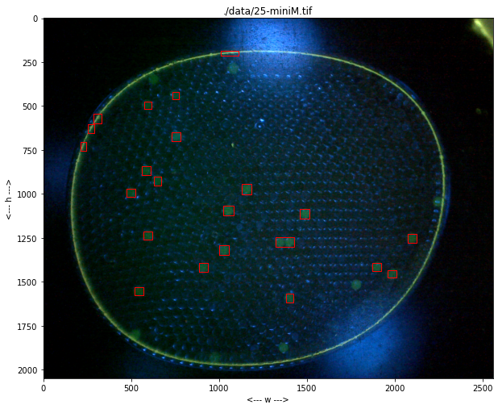
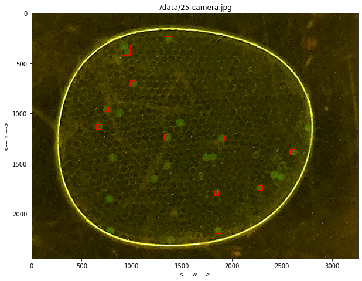

Computer Vision Case Study: Creating an Application
Contents
Computer Vision Case Study: Creating an Application#
Application#
import numpy as np
import matplotlib.pyplot as plt
import cv2
from collections import defaultdict
from scipy import ndimage
class Channel():
colormaps = {"k":"Greys", "r":"Reds", "g":"Greens", "b":"Blues"}
def __init__(self, data=None):
if data is None:
self.data = np.zeros((0,0), dtype=np.uint8)
else:
self.data = self.import_array(data)
def __call__(self, data=None):
""""Set and return current channel data."""
if not (data is None):
self.data = self.import_array(data)
return self.data
def import_array(self, data):
data = np.where(data < 0, 0, data)
data = np.where(data > 255, 255, data)
return data.astype(np.uint8)
@property
def histogram(self):
return cv2.calcHist([self.data], [0], None, [256], [0, 255]).flatten()
def show(self, ax, color='k'):
ax.imshow(self.data, cmap=self.colormaps[color])
def show_histogram(self, ax, color='k'):
bins = np.arange(0, 256)
ax.fill_between(bins, self.histogram, 0, color=color, alpha=0.3)
def equalize_histogram(self):
self.data = cv2.equalizeHist(self.data)
def blur_Gaussian(self, ksize=3):
self.data = cv2.GaussianBlur(self.data, (ksize, ksize), 0)
def threshold(self, T):
T, self.data = cv2.threshold(self.data, T, 255, cv2.THRESH_BINARY)
def threshold_otsu(self):
T, self.data = cv2.threshold(self.data, 0, 255, cv2.THRESH_BINARY + cv2.THRESH_OTSU)
return T
def morph_close(self, iterations=1, kernel=np.ones((3,3))):
ret = cv2.dilate(self.data, kernel=kernel, iterations=iterations)
self.data = cv2.erode(ret, kernel=kernel, iterations=iterations)
def morph_open(self, iterations=1, kernel=np.ones((3,3))):
ret = cv2.erode(self.data, kernel=kernel, iterations=iterations)
self.data = cv2.dilate(ret, kernel=kernel, iterations=iterations)
def find_particles(self):
structure = np.ones((3, 3))
labels, particle_count = ndimage.measurements.label(self.data, structure=structure)
# locate centers of mass
centers_of_mass = ndimage.center_of_mass(self.data, labels, np.arange(1, particle_count + 1))
# get slices containting particles
slices = ndimage.find_objects(labels)
# get raster points for each particle
points = []
Y, X = labels.shape
for n in range(len(centers_of_mass)):
locs = labels==(n+1)
points.append(np.array([(x, y) for x in range(X) for y in range(Y) if locs[y, x]]))
return centers_of_mass, slices, points
class Particle():
def __init__(self, center_of_mass, slice, raster_points):
self.yc, self.xc = center_of_mass
yslice, xslice = slice
self.x1, self.y1 = xslice.start, yslice.start
self.x2, self.y2 = xslice.stop, yslice.stop
self.w = self.x2 - self.x1
self.h = self.y2 - self.y1
self.size = np.sqrt(self.w * self.h)
self.raster_points = raster_points
def show(self, ax):
ya = self.y1
yb = self.y2
xa = self.x1
xb = self.x2
ax.plot([xa, xb, xb, xa, xa], [yb, yb, ya, ya, yb], 'r', lw=1)
class Labeler():
def __init__(self):
self.channels = defaultdict(Channel)
self.particles = []
def read(self, filepath):
self.filepath = filepath
self.img = cv2.cvtColor(cv2.imread(filepath), cv2.COLOR_BGR2RGB)
def show(self, ax):
ax.imshow(self.img)
ax.set_title(self.filepath)
ax.set_xlabel("<--- w --->")
ax.set_ylabel("<--- h --->")
for p in labeler.particles:
p.show(ax)
def find_particles(self, filepath, size_range=(0, 1e6)):
self.read(filepath)
r = self.img[:, :, 0]
g = self.img[:, :, 1]
b = self.img[:, :, 2]
self.channels['bw'](g - 0.5*b - 0.1*r - 20.0)
self.channels['bw'].equalize_histogram
self.channels['bw'].blur_Gaussian(31)
self.channels['bw'].threshold_otsu()
self.channels['bw'].morph_close(3)
self.channels['bw'].morph_open(8)
centers_of_mass, slices, raster_points = self.channels['bw'].find_particles()
self.particles = [Particle(centers_of_mass[k], slices[k], raster_points[k]) for k in range(len(centers_of_mass))]
self.particles = [p for p in self.particles if (p.size >= size_range[0]) and (p.size <= size_range[1])]
Demonstrations#
import glob
for filepath in glob.glob("./data/25-*"):
labeler = Labeler()
labeler.find_particles(filepath, size_range=(40, 100))
fig, ax = plt.subplots(1, 1, figsize=(10, 10))
labeler.show(ax)

